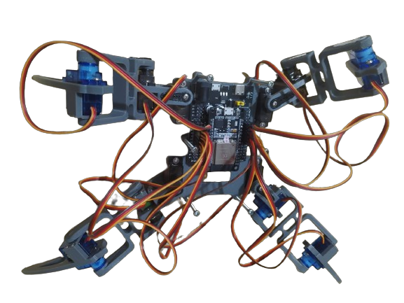
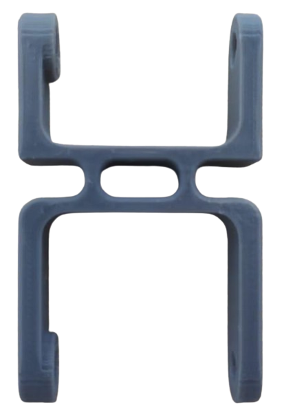
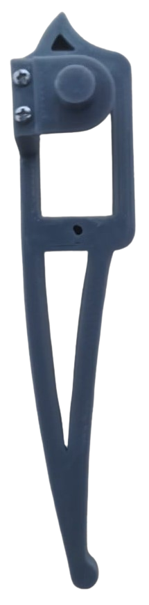
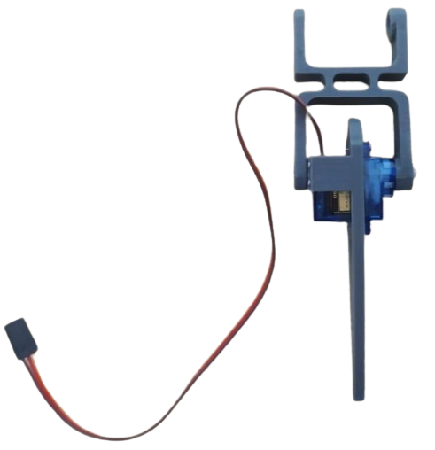
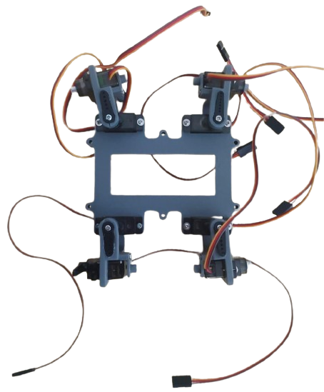
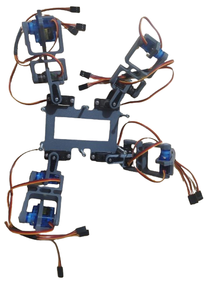
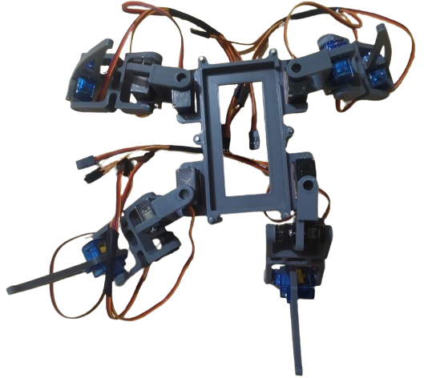
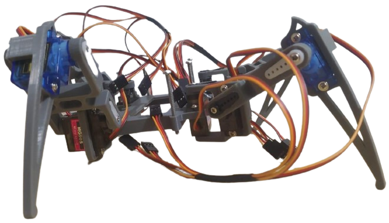
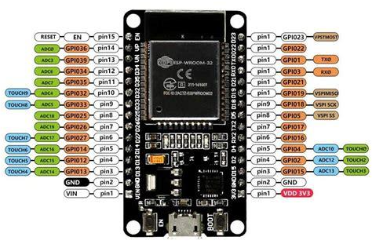
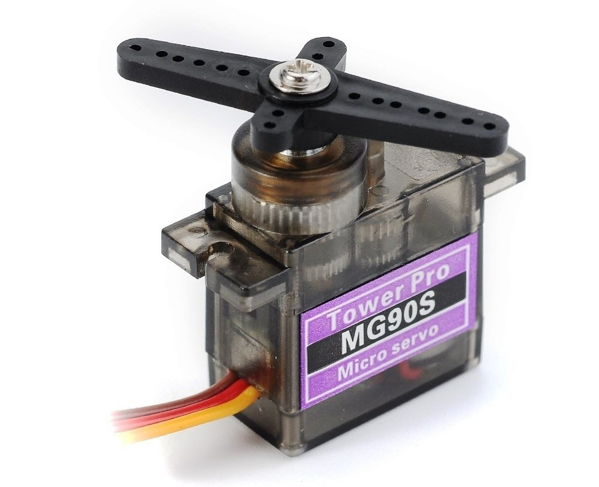

En ARCW, nos enorgullecemos de presentar nuestra innovadora araña robótica cuadrúpeda, diseñada para fusionar la tecnología y la programación de una manera interactiva y emocionante. Este proyecto vanguardista tiene como objetivo principal implementar y demostrar conocimientos avanzados en programación aplicada, permitiendo a los usuarios dar vida y movimiento a nuestra araña mediante una interfaz web intuitiva. La araña ARCW no solo es una herramienta educativa, sino también un dispositivo tecnológico avanzado que ofrece múltiples funciones. Entre sus características destacadas se encuentra una cámara de video integrada, que permite la transmisión en tiempo real, brindando una experiencia visual inmersiva y dinámica. Nuestro enfoque en la programación aplicada a la robótica permite a estudiantes, entusiastas y profesionales explorar y experimentar con control remoto, algoritmos de movimiento y la integración de sensores a través de una plataforma web accesible. Con ARCW, aspiramos a inspirar y equipar a la próxima generación de innovadores en el campo de la robótica y la tecnología.

Imágen de la araña
Propósito
Diseñar y desarrollar una innovadora araña robótica de vanguardia, capaz de ser controlada de forma remota a través de una interfaz intuitiva en una página web. Este proyecto, destinado a la materia de Programación Aplicada, se centrará en la creación de un sistema robótico sofisticado que permita un control preciso y fluido de cada una de sus extremidades, así como del desplazamiento integral del robot. El desarrollo incluirá la implementación de algoritmos avanzados para el movimiento coordinado y versátil de la araña robótica, posibilitando una variedad de patrones de locomoción que imiten los movimientos naturales de una araña real. Además, se integrará una cámara de alta definición en el cuerpo del robot, cuya transmisión en tiempo real podrá ser visualizada desde la página web, ofreciendo una experiencia interactiva y envolvente para el usuario. Se llevará a cabo una exhaustiva comprobación del sistema de control de las extremidades para garantizar su funcionamiento eficiente y adaptable a diferentes superficies y condiciones. Asimismo, se verificarán y optimizarán las capacidades de transmisión y recepción de la señal de video de la cámara, asegurando una conexión estable y de alta calidad entre la araña robótica y la interfaz web. Este proyecto no solo busca demostrar habilidades técnicas avanzadas en programación y robótica, sino también proporcionar una plataforma educativa y experimental que inspire y facilite futuros desarrollos en el campo de la robótica controlada remotamente.
partes de la araña

Parte 1 de la zona media para servos

Parte 2 de la zona final, tarso

Foto de la extremidad, usando parte 1 y parte 2
Las imágenes muestran las primeras piezas que conforman las patas de la araña robótica. Estas determinarán la altura de la araña sobre la superficie en la que se encuentre, y el desplazamiento. En la primera foto, vemos la parte central con el esppacio para colocar dos servos unidos a dos componentes adicionales: una articulación conectada a la base (el cuerpo de la araña) y a una parte 1 de la zona media, formando la sección inicial. La segunda foto representa la parte del tarso de una araña, unida a la zona media y completando toda la extremidad. En la tercera foto, se muestra el resultado de la pata sin su base, así, el funcionamiento del servo permitirá el movimiento de la araña al extenderse y contraerse, utilizando la fuerza para desplazarse mediante el apoyo de las patas como puntos fijos de apoyo.
Aquí se presenta el torso de la araña, este con la capacidad suficiente para soportar el peso de los componentes a usar para su funcionamiento, estos son: El porta pilas, las baterias de ion-litio, el modulo expansor de pines, y la ESP 32.
Para empezar mencionando algunos, con el tiempo se decidira si incluir más o no, también dependerá de que tanto pueda procesar el micro procesador a usar, en este caso la ESP 32.
Igualmente, con el rendimiento al que se ha presenciado destacar muy poco, se ha preferido optar por unicamente hacer una araña que pueda moverse, en dos direcciones, adelante y atrás. Así, también cada servo de forma independient y al ángulo que se desee, teniendo algunas consideraciones explicadas en otra sección, más adelate.

Parte del torso de la araña
cuerpo de la araña
Se presenta los resultados de la araña armada con la etructura basica, usando el armazon que define al cuadrupedo, además tres perspectivas diferentes, es el avance inicial, primer paso para llegar al objetivo propuesto, lo ideal es saber desde el principio los servos que se usaran para diseñar las diferentes partes a la medida justa.
Asimismo, se puede defimir antes de programar el codigo los ángulos, y movimientos a realizar, que secuencia seguirá, cuales serán los movimientos capaces a realizar, entre otros aspectos. Esto con la finalidad de poder identificar un primer comienzo que sirva como los cimientos para la estructura del código y las conexiones a realizar entre elementos, dispositivos, o mecanismos, tanto de software como mecánicos.
En un comienzo, se podrá mover los servos independientemente, escoger el servo y el angulo al que se quiere mover, siempre y cuano se mantenga entre los límites de giro que tiene cada servo, en este caso oscila entre 160° a 180°, para mayor comodidad, se prefiriran los parametros tomando la movilidad del servo con menor capacidad, menos 20 grados, para estabilizar el margen de error y la agilidad de funcionamiento.

Imágen de la araña desde la vista superior

Imágen de la araña desde la vista inferior

Imágen de la araña desde la vista lateral
Componentes

ESP 32 v-room clasica
El ESP32-WROOM es el cerebro esencial de nuestra araña, responsable de controlar todos los elementos electrónicos del dispositivo. Este impresionante módulo, basado en el reconocido microcontrolador ESP32 de Espressif Systems, está diseñado para brindar una solución completa y eficiente a los proyectos de Internet de las Cosas (IoT). Con su procesador dual-core de alto rendimiento, conectividad Wi-Fi y Bluetooth integradas, y múltiples interfaces de comunicación, todo en un formato compacto, el ESP32-WROOM destaca por su capacidad para manejar tareas complejas con un consumo de energía sorprendentemente bajo. Es la elección perfecta para aplicaciones que requieren una conectividad inalámbrica robusta y un procesamiento potente, como dispositivos inteligentes, sistemas de automatización y aplicaciones industriales.

Servo motor modelo mg90s
En el corazón de nuestro proyecto se encuentran los servomotores, dispositivos electromecánicos que combinan un motor de corriente continua con engranajes y un sistema de control de retroalimentación. Estos componentes, lejos de ser simples motores, nos brindan un control preciso y milimétrico del movimiento rotatorio, permitiéndonos dar vida a nuestra araña robótica. Por ultimo y mas importante resaltar la facilidad de controlar estos dispositivos en este caso por un Esp32.